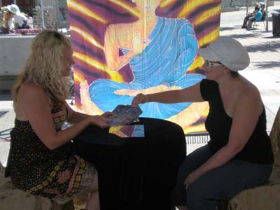

Readings with Psychic Medium Andrea Zonnis
Through the power of intent Andrea believes that we all have the ability to create magic in our lives and carve our dreams into our destiny. Andrea’s readings are fun and uplifting with the intention of love, light and peace for the greater good of all. Every reading is a personal experience and has relevance to what is going on in your life. Helpful people, family and friends will often come into the readings along with guardian angels, guides, spirits, and deceased loved ones.
A reading with Andrea will give you clarity in situations, so that you can see the moment with better understanding. Messages will come through relating to the past, present and future bringing light to where healing is needed. An opening in your heart will be created to give you the opportunity to reflect and contemplate on the deeper challenges of your life.
Andrea’s life purpose is to be in joyful service to humanity and to help others to recognize their true potential.
Services
Mini (15 minutes)
$40
A taste of spirit that will give you an uplifting overview of major events, themes and lessons that have been shaping your life in the past, present and future. This is the perfect reading for parties, special events and group gatherings.
Half (30 minutes)
$80
A reflective reading to give you clarity, confirmation and understanding to the lessons that you are experiencing. The focus of the reading will be on life path, career, success, love, relationships, friendships, opportunities and future manifestations.
Full (60 minutes)
$120
In this powerful reading we will go deeper under the surface to reveal insight into your purpose and destiny. A Full reading gives us the opportunity to expand on the topics of the Half reading and ask further questions about health, family and life decisions. All questions and topics are welcome.
Prices may vary in locations outside of Victoria
Workshops on intuition, spiritual living and Tarot are offered on the 2nd Wednesday of each month starting at 6:30pm at Red Gate Healing Studio. Please email or call for more information or to register.To contact Andrea call (778) 433-7334 or email her.
Included in with your reading is a CD recording of the session.
Cash and Paypal payment options available.
| $40 - 15 minutes | |
| $80 - 30 minutes | |
| $120 - 1 hour |
Frequently asked questions:
How long of a psychic reading do I need?
If you are a listener or don’t have a lot of questions, a half session of 30 minutes is usually enough time for Andrea to share everything that she’s picking up on. If you have lots of burning questions or like to talk, Andrea would recommend a full hour in order to complete the experience.
What is a psychic reading?
The word psychic comes from the word “psyche”, which simply means soul. Andrea’s gift allows her to see into the soul and help align her clients to their personal life missions or truths. Messages will pour in about what’s happening right now, what wants to be healed from the past and how your desires are manifesting for the future. As a Clairvoyant, Andrea sees images, pictures or “mini videos”, visions that are either symbolic or sometimes literal. Using Clairaudient skills Andrea hears messages that pick up dates, important phrases and when the energy is flowing, names. Clairsentience means “clear feeling” and helps Andrea to identify emotional energy blockages in the body that are caused by trauma, stress and physical ailments. As a Clairvoyant Medium she sees the spirit of loved ones that have crossed over, gets a sense of who they were and helps to deliver messages from the other side. All of Andrea’s readings are performed with the intention of love, light, healing and accuracy for the greatest good of all.
Can Andrea predict the future?
Yes. It’s important to clarify that Andrea believes in the power of free will, that we each have the ability to shape and choose our future. She sees life as a spider web filled with choices that are represented by each strand of the web, and as we complete each action we come to a cross roads. Destiny is the dew on the web, sparkles of light that shine as beacons calling us forward. There are no wrong choices as there are many ways to navigate the web, many routes to choose from that all can bring us to the same magical place. This is the paradox: we are writing our future in the same moment that the movie is playing.
What kind of questions can I ask?
Absolutely anything! Career, love life, family check ins, blockages, dreams, resolving conflicts, friends, kids, and sex, just to name a few! Andrea is very comfortable talking about any subject as her approach and beliefs are VERY non-judgement and open to all ways of life. The only thing Andrea does not predict directly is death as that’s up to the Universe.
How much information should I share?
That's completely up to you! The information you share with Andrea is confidential, so your secrets are safe! It’s all about your intention coming into the reading. Do you have a specific challenge that you would like to address or are you simply looking for a taste of the mystical world? Are you playing “test the psychic” or do you seek help and guidance? You can tell Andrea everything or nothing at all. Just be sure to give her a yes or no confirmation that she’s heading down the right track!
How does it work?
Andrea starts the session by asking if there are any topics or subjects that you wish to explore. Then the Tarot cards gets passed to you to add your energy so that the cards know to tell your story. Andrea has designed her own Tarot spread that she uses regularly. In person, you pick the cards, while skype or phone readings Andrea will pick them for you. The cards act as a map to give Andrea a picture of what’s going on and signal to spirit that she is open to receiving messages through her clairvoyance, clairaudience and clairsentience. You will know in the first 5 minutes if Andrea is making a true connection with you. If for whatever reason you don’t feel it, let her know and she’ll end the reading and not charge you – this happens about 1% of the time – it’s nothing personal, it’s just that sometimes things don’t connect, just as not all people connect.
Does a phone or skype reading work the same way as meeting in person?
Absolutely. The messages Andrea receives comes directly from the highest source of light in the Universe. There is no need for the other person to be physically in the room because the energy that is being tapped into is timeless and everywhere. The information that comes through is just as accurate and pertinent on phone or skype as in person.
How do I book a phone or skype session?
Call or write an email and Andrea will get back to you in 24 – 48 hours (Monday – Friday). An E-transfer or paypal payment is needed at the time of booking to secure your time spot.
Confidentiality Guarantee
All personal information exchanged during our session will remain private and confidential. The relationship between myself and my clients is based on trust, integrity and discretion beliefs that I deeply value. Your secrets are safe with me.
Satisfaction Guarantee
This is a very rare occurrence but if you feel that we have not made a connection and you are not happy with your reading, please let me know as soon as possible. I am happy to give you your money back.
Agreement for services rendered
The future is shaped by our own personal choices and decisions and therefore always changing. Responsibility for your life lies in your hands. Clients should never live their lives solely by what comes through a reading but use the information to help improve their current situation. Andrea Zonnis cannot be held liable for any actions taken or lack thereof following services rendered. Andrea Zonnis is not, nor does claim to be a medical professional and a reading should never replace consulting a medical professional. If you have any medical issues please see your doctor as soon as possible. Readings are for entertainment purposes only. Any client seeking Andrea’s services acknowledges that he/she has read and understood the terms of this agreement.
Cancellation Policy
Please allow 24 hours notice if you must cancel or postpone your reading otherwise you must pay for the full session.